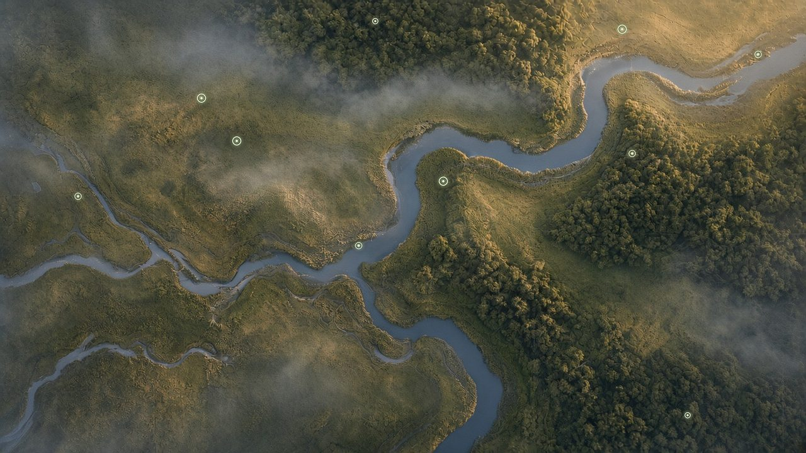

Field journal
Field Guide 01 · Understanding AI
A beginner field guide to open-weight models, running them locally, agents, and privacy. It starts from what a model actually is, then walks the rest in order.
Read it
FringeNode: AI engineering for living systems
More is taking shape at the edges, where living land meets what we can build. We'll share it when it's ready.
Field journal
A beginner field guide to open-weight models, running them locally, agents, and privacy. It starts from what a model actually is, then walks the rest in order.
Read itField journal
The 19 terms to learn first for AI engineering and agent orchestration, in order, plus 78 more in one plain line each.
Read itA closer look at how two of these pieces came to be.
A quiet list, for when there's something new to share.